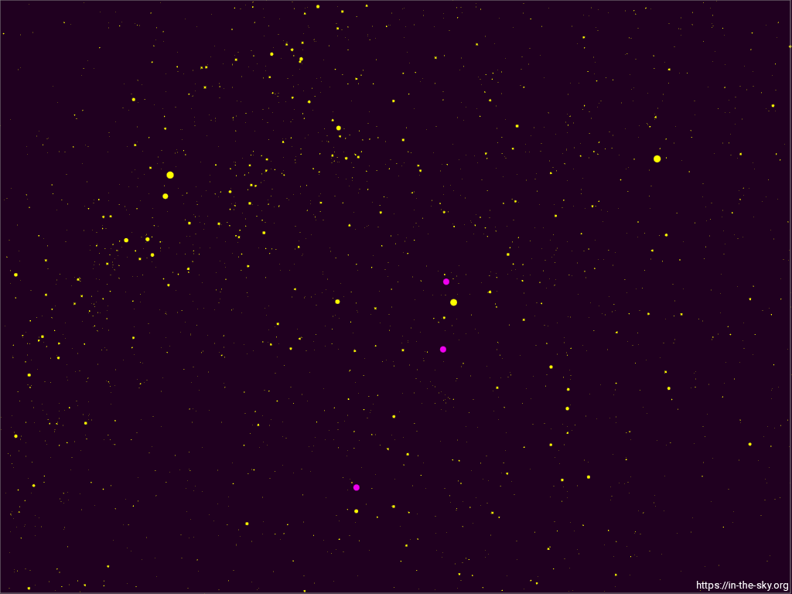
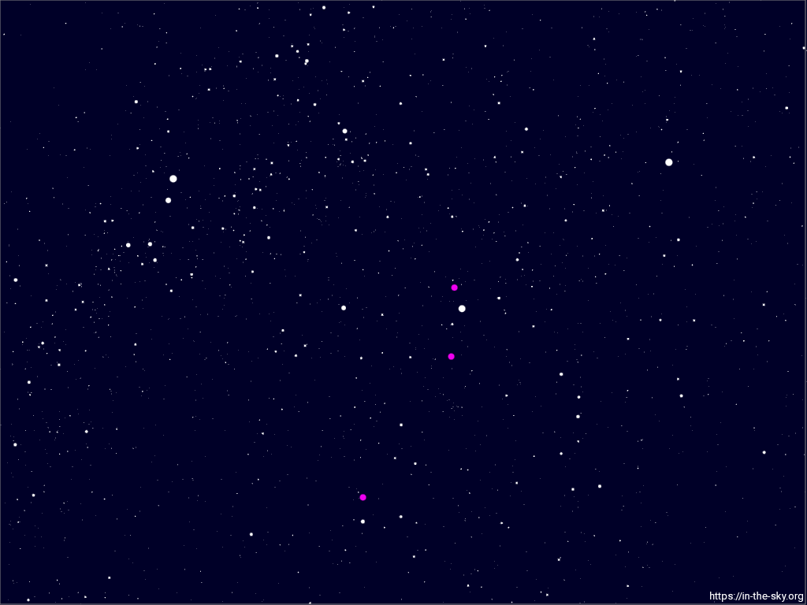

✦ Uma noite inesquecível ✦
meses juntos
26 de Junho de 2025 → 26 de Abril de 2026
Naquela noite, as estrelas foram testemunhas do nosso começo.
O céu naquela noite
Cada ponto de luz no céu estava no lugar exato para iluminar o momento em que eu te pedi para ser minha.


Os pontos rosas são planetas — eles também pararam para nos observar.
Nossa história
Mês 1 · Junho 2025
O sim que mudou tudo. As estrelas foram testemunhas.
Mês 2 · Julho 2025
Descobrindo cada cantinho de quem você é.
Mês 3 · Agosto 2025
Risos que não precisam de motivo.
Mês 4 · Setembro 2025
Aprendi que seu abraço é o meu lugar favorito.
Mês 5 · Outubro 2025
Metade do caminho, o coração mais cheio.
Mês 6 · Novembro 2025
Seis meses e a saudade já chega antes de você ir embora.
Mês 7 · Dezembro 2025
O fim de ano mais bonito que já tive.
Mês 8 · Janeiro 2026
Novo ano, o mesmo desejo: mais tempo com você.
Mês 9 · Fevereiro 2026
Todo dia 26 é nosso, não só o do calendário.
Mês 10 · Março → Abril 2026
Dez meses. Dez motivos por segundo para te escolher de novo.